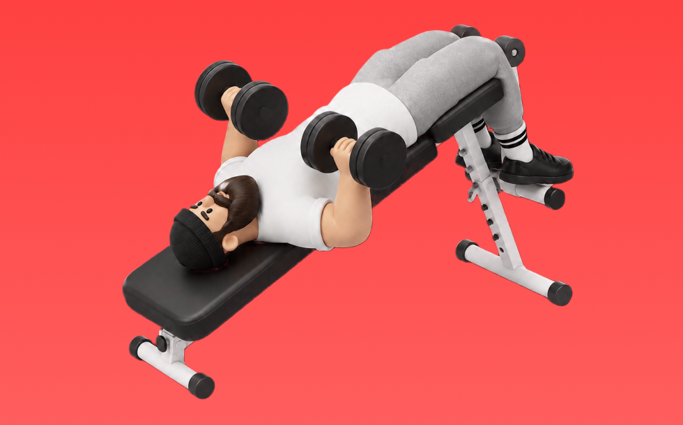

Decline Dumbbell Press

Use dumbbells on a decline bench. Lower to the lower chest and press up. Targets lower pecs, front delts, and triceps; easy to fix left–right imbalances. Builds lower chest size and pressing strength.
- Primary Muscle Group
- Chest
- Detailed Muscles
- Pectorals / Front delts / Triceps
- Equipment
- Dumbbell
- Also Known As
- デクラインDBプレス / デクラインダンベル / decline db press / decline dumbbell press
YouTube Videos
-
Decline Dumbbell Chest Press: How To
-
STOP Doing Dumbbell Press Like This (5 Mistakes Slowing Your Chest Gains)
-
Decline Dumbbell Bench Press - Chest Exercise
-
Instructional Fitness - Decline Dumbbell Bench Press
-
Exercise Index - Slight Decline Dumbbell Press
-
Dumbbell Decline Bench Press | Technique, Sets, Reps & Mistakes
-
Decline Dumbbell Bench Press - Chest Exercise
-
Stop Doing Dumbbell Bench Press Like This (I'M BEGGING YOU!)
-
The ONLY 2 Dumbbell Chest Exercises You Need (NO, SERIOUSLY!)
-
Navigating the Decline Bench With Dumbbells
YouTube Shorts
-
Decline Dumbbell Press Mistake ❌#shorts #gym #bodybuilding #fitness
-
FIX Your Dumbbell Bench Press (DO THIS INSTEAD!)
-
No partner no problem💥Set up your decline DB press like this
-
Decline Dumbbell Bench Press - Chest Exercise - Bodybuilding.com
-
The PERFECT Incline Dumbbell Chest Press
-
❌ Decline Bench Press Mistake (AVOID THIS!)
-
Best Dumbbell Bench Press Tutorial Ever Made
-
🔥 The Best Dumbbell Bench Press Tutorial You’ll Ever Watch
-
Decline Press: The Ultimate Chest Workout You Need
-
How to do a Flat Dumbbell Chest Press!
-
Build a Powerful Chest: Best Dumbbell Chest Workouts for Massive Gains!
-
Sam Sulek's Dumbbell Bench Press Workout Form Tip 💯 #samsulek #samsulekshorts
-
SKNK9: Decline Dumbbell Bench lifting tutorials🏋️♂️Save & Share🫂#chest #injury #declinebenchpress
-
Key tips for a strong and safe dumbbell incline press
-
Incline DB Bench 🔥 BEST Guide Ever Made
-
✅ The PERFECT Dumbbell Chest Press
-
Decline bench press Mistake ❌ #shorts #gym #fitness #bodybuilding
-
Decline Db chest press
-
💪 Decline Dumbbell Press for Lower Chest Growth | Safe Setup & Big Gains💥
-
Decline Press Form: WRONG vs RIGHT ✅ #Shorts
-
How To Do a Proper Incline Dumbbell Press
-
How to do a Dumbbell Incline Chest Press!
-
FIX THESE Dumbbell Chest Fly Mistakes!
-
Don’t Do Dumbbell Chest Press Like This! ❌ | Fix Your Form for a Bigger, Safer Chest 💪
-
STOP Doing Dumbbell Press Like This
-
How to Properly Perform the Flat Dumbbell Chest Press With Good Form (Exercise Demonstration)
-
How to Safely Drop Dumbbells After Chest Pressing (AVOID SHOULDER INJURY)!!!
-
INCLINED DUMBBELL CHEST PRESS MISTAKES, THE PERFECT INCLINE DUMBBELL CHEST PRESS
-
9 Powerfull Dumbbell Chest Workout to Transform Upper Body| #workout #chestworkout
-
explode your chest gains with this cue!
-
THE SECRET TO MY MASSIVE CHEST - INCLINE DUMBBELL BENCH PRESS
-
Dumbbell Bench Press Mistake (KILLING GAINS!)
-
How to Setup on Incline Dumbbell Bench Press (and not waste energy)
-
How to Properly do Decline Ab Crunches
-
The Most Overlooked Part of Dumbbell Bench Press
-
💥 Build a Bigger Chest With These 6 Bench Press Tips
-
Correct Dumbbell Floor Press Form - Floor bench press #fitness #benchpress
-
The dumbbell floor press is a great exercise that can target different areas
-
How To: Seated Dumbbell Shoulder Press | Form Tutorial
-
The Perfect Incline Bench Press‼️
How to Perform
- Set a stable position and brace your torso.
- Press with control without using momentum.
- Lower under control while keeping range of motion.
Form Tips
- Do not shrug your shoulders
- Keep wrists neutral
- Avoid excessive momentum
Pro Tips
- Prioritize form and range of motion before adding load.
- If shoulders feel uncomfortable, reduce load and range.
Rep Guide
General guidelines. Adjust based on your goal, experience, and condition.
- Strength: 1-5 reps
- Hypertrophy: 6-12 reps
- Endurance: 13-20 reps
Get the app
Log your trainingand workoutsin Biggr.Start for freeright now.